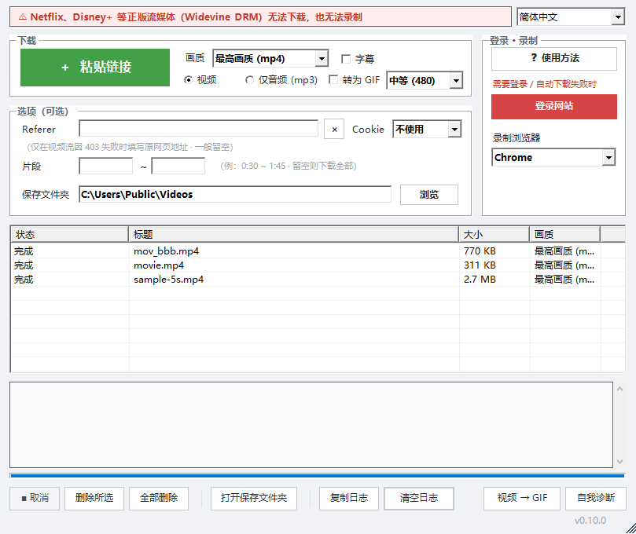

电脑上也能下载任何视频！！
粘贴视频链接，轻松下载。
Windows 10/11 · 免费 · 免安装

使用方法
程序支持 10 种语言，可在右上角的选择框中切换。
- 粘贴链接 — 复制视频页面地址，点 [＋ 粘贴链接]。多个链接就分行复制，也可以把地址拖到窗口里。
- 选好画质就开始 — 选择画质和“视频”或“仅音频（mp3）”，会自动开始下载。点 [打开保存文件夹]查看文件。
- 链接不行时 — 点 [登录网站]，在打开的浏览器里（需要时先登录）播放视频，再点 [抓取视频流]，即可下载真正的视频文件。
- 还不行就录制 — 点 [● 开始录制]，结束时点 [■ 停止并保存]。耗时与视频长度相同，保存为 mp4。
- 只要一部分：在“区间”里输入 0:30 ~ 1:45（留空为全部）。
- 字幕：勾选后会一并保存字幕（.srt，有的话）。
- 播放列表：粘贴播放列表链接时会询问“全部 / 仅此视频”。
- 失败的项目：在列表中右键 → [重新下载]。
- 下载中要停止：点 [■ 取消]。
功能
粘贴链接
大多数常用视频网站粘贴链接即可。
抓取视频流
链接不行时，在浏览器中打开页面并播放，再点“抓取视频流”，即可下载真正的视频文件。
屏幕录制
抓不到视频流时，可以录制正在播放的视频。带有防复制保护的付费流媒体视频无法保存。
又快又稳
大文件分段下载，速度快，同时保持较少的连接，不给网站添负担。
便携
解压即可运行，设置只保存在程序文件夹里。
安装
- 用上方按钮下载 zip 文件。
- 右键 zip 文件 → 属性 → 勾选解除锁定 → 确定。
- 解压到任意位置，双击文件夹里的 .vbs 文件。
如果出现 Windows 安全（SmartScreen）提示，点更多信息 → 仍要运行。
支持 just downloader
just downloader 是免费的。如果它帮你节省了时间，一点小小的支持就是下次更新的动力。